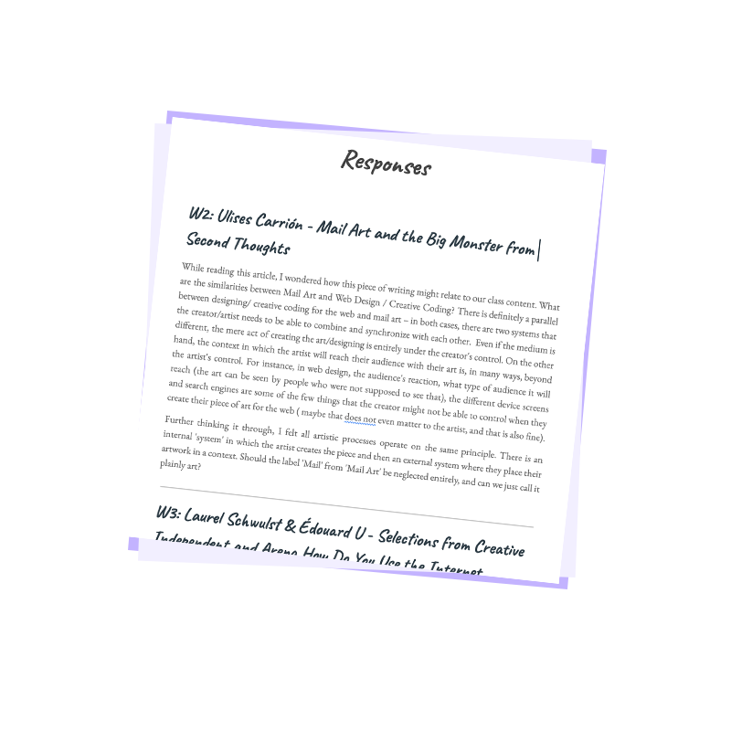

I'm Ani, a
designer
+
animator
. This is my portfolio for Web Design.

S1: ASCII Art
S2: Still Life
S3: Online Zine
S2: Webring
A2: Morning Boost
A3: Face Clock
A1: Hidden Emotions
A2: Sunset Reminder
A3: Shape Generator